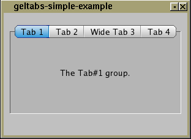

Fl_Group
|
+----Fl_Gel_Tabs
#include <FL/Fl_Gel_Tabs.H>
The Fl_Gel_Tabs widget is similar to the Mac OSX style tabs interface. By adding child groups to the widget, the user can access each child group by pressing the corresponding "tab" button.
The tab buttons get their names from the label() of each child group.
Tabs can be selected with the mouse, or via keyboard navigation using the Left/Right arrows and/or Tab key.
Clicking the tab makes a child visible() by calling show() on it, and all other children are made invisible by calling hide() on them. Usually the children are Fl_Group widgets containing several widgets themselves.
Each child makes a card, and it's label() is printed on the card tab, including the label font and style. The selection color of that child is used to color the tab, while the color of the child determines the background color of the pane.
The position of the tabs (top or bottom) is controlled by the bounding box of the children (there should be some space between the children and the edge of the Fl_Gel_Tabs), and the tabs may be placed "inverted" on the bottom, this is determined by which gap is larger. It is easiest to lay this out in fluid, using the fluid browser to select each child group and resize them until the tabs look the way you want them to.
Creates a new Fl_Gel_Tabs widget using the given position, size, and label string. The default boxtype is FL_THIN_UP_BOX.
Use add(Fl_Widget *) (or the begin()/end() mechanism) to add the children, which are usually Fl_Group widgets. The children should be sized to stay away from the top or bottom edge of the Fl_Gel_Tabs widget, which is where the tabs will be drawn.
The destructor also deletes all the children. This allows a whole tree to be deleted at once, without having to keep a pointer to all the children in the user code. A kludge has been done so the Fl_Gel_Tabs and all of it's children can be automatic (local) variables, but you must declare the Fl_Gel_Tabs widget first so that it is destroyed last.
Gets or sets the currently visible widget/tab.